Chapter 1 · Part 1 — The “M” Things
“Let’s go to the tree house,” said Annie.
She and Jack were passing the Frog Creek woods on their way home from their swimming class at the Y.
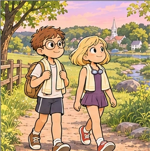
“No. I want to go home and change out of my bathing suit,” said Jack.
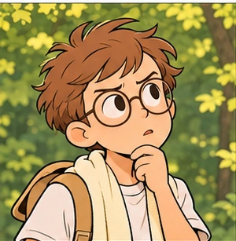
“Oh, that’ll take too long,” said Annie. “Don’t you want to save Morgan as soon as possible?”
“Of course,” said Jack.
“Then come on! Before the sun sets!” said Annie.
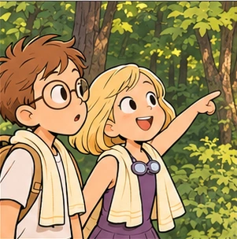
She darted into the woods.
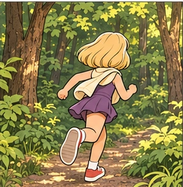
Jack sighed. He gave up on the idea of changing out of his bathing suit.
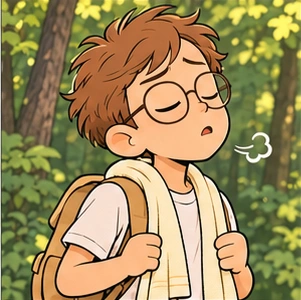
He pushed his glasses into place. He followed Annie into the Frog Creek woods.
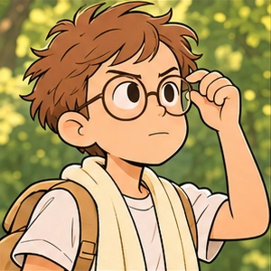
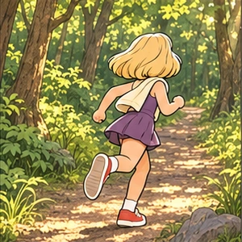
The warm air smelled fresh and green.
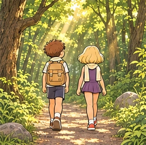
He moved through patches of sunlight and shadow. Soon he came to a small clearing.
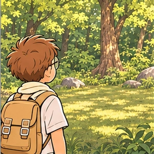
He looked up. There it was. The magic tree house in the tallest tree in the woods.
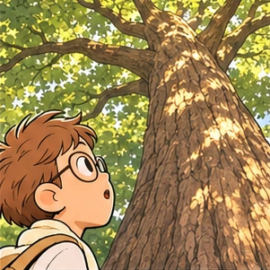
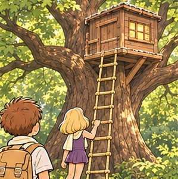
“Hurry!” called Annie. She was climbing the rope ladder up to the tree house.
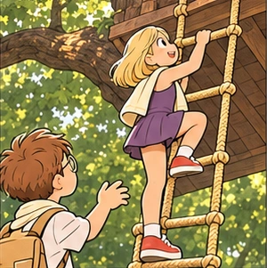
Jack grabbed the ladder. He started up after her.
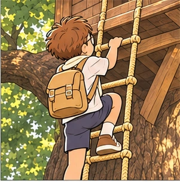
Finally they reached the tree house.
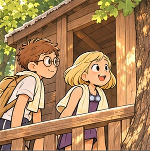
Squeak. A mouse sat on the window sill.
“Hi, Peanut!” cried Annie.
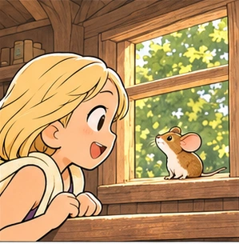
Jack patted the tiny head.
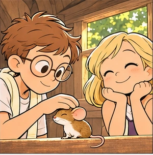
“Sorry we didn’t come sooner,” Annie said. “But we had to go to our swimming lesson.”
Squeak.
“What happened while we were gone?” asked Annie, looking around the tree house.
Jack stared at the large M carved into the wooden floor.
On the M were a moonstone and a mango, the special things they’d found on their last two journeys.
“Hey, guess what?” said Jack. “Moonstone and mango start with the letter M. Just like Morgan.”
“You’re right,” said Annie.
“I bet all four things start with an M,” said Jack.
“Right,” said Annie. “I wonder where we’ll find the next one.”
She and Jack stared at the stacks of books in the tree house. Books on the Amazon rain forest, ninjas, pirates, mummies, knights, and dinosaurs.
All of them were closed. Only one book lay open in the corner.
“We’re just about to find out,” said Jack.
They walked over to the open book.
They looked at the page the book was opened to. It showed a picture of rocks and snow.
“Wow,” said Annie, running her finger over the picture. “I love snow. I wish we could go there right now.”
“Wait,” said Jack. “We’re not prepared.” Then he had another thought. “And we’re wearing our bathing suits! Stop!”
“Oops,” said Annie.
Too late. The wind started to blow.
The leaves started to shake.
The tree house started to spin.
It spun faster and faster!
Then everything was silent.
It was as silent as the falling snow.